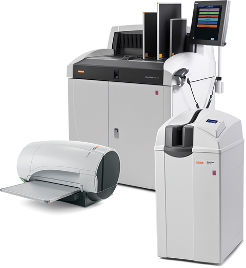

Carestream directview sistemas de radiografía computada (cr)

DESCRIPCIÓN:
Los sistemas de radiografía computada CARESTREAM DIRECTVIEW permiten digitalizar sus salas de rayos X convencionales, como una forma accesible de migrar hacia un servicio de radiología digital.
CARACTERÍSTICAS:
Sistema CR Carestream Directview
• CR’s con “todo incluido”: integra el lector láser, identificación de paciente/caseta/examen, unidad de procesamiento de imagen para vista previa y control de calidad de imagen, y hasta el sistema respaldo de energía (UPS).
• Envío simultáneo de imágenes a diferentes destinos DICOM (impresora láser, estación de trabajo o archivo digital).
• Intuitiva interfase de usuario-fácil de usar.
• Configuración de parámetros de visualización predeterminados para cada estudio.
• Casetas con placa de fósforos rígida que evita el desgaste de la pantalla.
• Diseñados para optimizar el flujo de trabajo (panel remoto de operaciones, procesamiento de imagen y envío automático de imágenes de acuerdo a parámetros preestablecidos, entre otros).
• Vaya más allá en calidad de imágenes y confianza en el diagnóstico mediante el software opcional de procesamiento Carestream EVP, que provee una mayor latitud de imagen sin perder el contraste del detalle.
• Servicios de impresión DICOM incluidos.
Sistema CR Elite
• Es capaz de producir imágenes de alta calidad en un tamaño tan compacto como para caber en una sala de rayos X o en una sala de control de rayos X.
• Utiliza todos los casettes CARESTREAM DIRECTVIEW con pantallas rígidas, como PQ, EHR-M3, SNP-M1.
• Opción para mamografía disponible en los mercados aprobados.
Sistema CR Classic
El Sistema CARESTREAM DIRECTVIEW Classic CR es fácil de instalar, produce imágenes de alta calidad y es muy pequeño.
• Admite exámenes radiográficos generales, así como imágenes de gran longitud e imágenes dentales.
• Utiliza todos los casettes CARESTREAM DIRECTVIEW con pantallas rígidas, incluidas las nuevas pantallas PQ.
• Sistema CR confiable, ya sea distribuido o centralizado.
• Ofrece tiempos de ciclo de casette de hasta 69 planchas por hora de 35 × 43 cm para admitir flujos de trabajo de gran volumen.
Sistema CR Vita Flex
Es ideal para hospitales, clínicas y consultorios de especialidades pequeños.
• Pesa solamente 36 kg, es más pequeño y más liviano que otras soluciones de radiología computarizada.
• Compatibilidad insuperable que permite una integración simple al flujo de trabajo en curso.
• Portátil, resistente para utilizarlo en condiciones extremas y en una variedad de aplicaciones.
• Capacidad de producción de 44 placas por hora.
Sistema CR Carestream Directview Max
• Solución centralizada con flujo de trabajo descentralizado.
• Permite cargar múltiples casetas.
• Sistema de carga automática que permite tener hasta 8 casetas expuestas (listas para ser leídas por el CR) y 8 casetas “limpias”.
• Procesa hasta 86 casetas (35 × 35 cm) por hora.
• Puede almacenar aproximadamente hasta 2,000 imágenes en línea para acceso rápido.
• Utilice el panel remoto de operaciones para introducir los datos del paciente y del estudio, lea el código de barras de la caseta y simplemente deposite sus casetas en la unidad de CR MAX, y regrese a la sala donde se encuentra el panel remoto de operaciones.
• Casetas con placa de fósforos rígida que evita el desgaste de la pantalla.
Accesorios opcionales:
• Tamaños de casetas y pantallas disponibles:
|
35 × 43 cm |
18 × 24 cm |
|
|
35 × 35 cm |
15 × 30 cm |
|
|
24 × 30 cm |
• Software de procesamiento avanzado de imagen EVP.
• Sistema para imágenes de gran longitud (ejemplo columna completa).
• Panel remoto de operaciones (permite agilizar el flujo de trabajo).
• Herramienta para control de calidad total –por la propia institución.
• Software para captura de datos de paciente –desde una PC normal.
• Software para impresión en tamaño real, detección de rejilla, entre otras funciones, sólo para el MAX).
• Servicios DICOM de almacenamiento (“storage”) y de manejo de listas de trabajo (“worklist”).
DATOS COMPLEMENTARIOS: Si desea obtener más información sobre los equipos de radiografía computada CARESTREAM DIRECTVIEW o sus accesorios, favor de contactar al representante CARESTREAM de su localidad o a:
CARESTREAM
Teléfono: (33) 3134-6200
o bien, visítenos en: www.carestream.com.mx